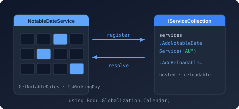

Bodu.Globalization.Calendar.DependencyInjection

Bodu.Globalization.Calendar.DependencyInjection is the Microsoft.Extensions.DependencyInjection integration for
Bodu.Globalization.Calendar. It registers
INotableDateService as a singleton over a loaded
NotableDateResource — or a factory that produces one — so an ASP.NET Core
application, a generic host, or any IServiceCollection-based composition root can inject the calendar service
rather than composing new NotableDateService(...) by hand. Part of the
Globalization & Calendars topic.
The package is deliberately thin. A resource is an immutable, already-validated value, so registration takes the
resource (or a factory for it) directly; there is no fluent builder. Resource-level behavior stays in the document's
<ResolutionPolicy>, and the service's optional collaborators — a custom algorithm registry, collision resolver,
adjustment handlers, code-first providers — travel in a NotableDateServiceOptions
passed to the matching overload. Console applications, libraries, and tests that prefer direct construction keep
using new NotableDateService(...) unchanged.
Note
There is no Bodu.Globalization.Calendar.DependencyInjection namespace. Every extension method lives on
NotableDateServiceCollectionExtensions in the Bodu.Globalization.Calendar
namespace, so using Bodu.Globalization.Calendar; brings them into scope on IServiceCollection.
Core mental model
NotableDateResource ──▶ services.AddNotableDateService(resource | factory [, options])
│
▼
singleton INotableDateService ◀── injected by consumers
│
AddReloadableNotableDateService(...) additionally registers
MutableNotableDateResourceProvider (+ INotableDateResourceProvider)
so provider.Reload(newResource) swaps the live service's data
A registration captures what resource the service resolves against and which collaborators it is composed with; the container builds the NotableDateService (or, for the reloadable forms, a ReloadableNotableDateService over a MutableNotableDateResourceProvider) on first resolution and shares that instance for the lifetime of the container.
The registration surface
Ten overloads, all on NotableDateServiceCollectionExtensions, all returning the
same IServiceCollection for chaining. Every one throws ArgumentNullException for a null services, resource,
factory, or key.
AddNotableDateService — a fixed resource
| Overload | Registers |
|---|---|
AddNotableDateService(IServiceCollection, NotableDateResource resource) |
A singleton INotableDateService over an already-loaded resource. |
AddNotableDateService(IServiceCollection, NotableDateResource resource, NotableDateServiceOptions? options) |
The same, composed with the collaborators on options. |
AddNotableDateService(IServiceCollection, Func<IServiceProvider, NotableDateResource> resourceFactory) |
The resource is produced from the container when the service is first resolved — loaded from configuration, or from a data pack chosen at run time. |
AddNotableDateService(IServiceCollection, Func<IServiceProvider, NotableDateResource> resourceFactory, Func<IServiceProvider, NotableDateServiceOptions?>? optionsFactory) |
Factory registration with the collaborators also produced from the container; the options factory (and its result) may be null. |
AddNotableDateService(IServiceCollection, string serviceKey, NotableDateResource resource, NotableDateServiceOptions? options = null) |
A keyed singleton, so a multi-jurisdiction host registers one service per key and resolves with GetRequiredKeyedService<INotableDateService>(key) or [FromKeyedServices(key)]. |
AddNotableDateService(IServiceCollection, string serviceKey, Func<IServiceProvider, NotableDateResource> resourceFactory, Func<IServiceProvider, NotableDateServiceOptions?>? optionsFactory = null) |
The keyed registration with factory-produced resource and collaborators. |
AddReloadableNotableDateService — a swappable resource
| Overload | Registers |
|---|---|
AddReloadableNotableDateService(IServiceCollection, NotableDateResource initialResource) |
A singleton INotableDateService (a ReloadableNotableDateService) and a singleton MutableNotableDateResourceProvider, also exposed as INotableDateResourceProvider. Inject the provider and call Reload(resource); the live service reflects the new data on its next query. |
AddReloadableNotableDateService(IServiceCollection, NotableDateResource initialResource, NotableDateServiceOptions? options) |
The reloadable registration with collaborators propagated to each rebuilt inner service. |
AddReloadableNotableDateService(IServiceCollection, Func<IServiceProvider, NotableDateResource> initialResourceFactory, NotableDateServiceOptions? options = null) |
The reloadable registration with the initial resource produced from the container. |
AddReloadableNotableDateService<TOptions>(IServiceCollection, Func<IServiceProvider, TOptions, NotableDateResource> resourceFactory, NotableDateServiceOptions? options = null) where TOptions : class |
Driven by IOptionsMonitor<TOptions>: the factory runs once for the initial load and again on every options change, and each rebuilt resource is swapped into the live service. A factory failure during a change is logged (EventId 4001, Error) and leaves the previous resource in effect; a successful swap logs EventId 4002. |
Lifetimes and idempotency
- Singleton, always.
INotableDateServiceis registered as a singleton because a resource is immutable and the resolver holds no shared mutable state, so one instance serves the whole application and is safe to resolve from any scope. The reloadable provider is a singleton too; aReload(...)is observed by every consumer of the singleton service on its next query. - Idempotent (
TryAddsemantics). A secondAddNotableDateService— or, for the keyed overloads, a second registration under the same key — leaves the first in place rather than replacing it. Keyed and unkeyed registrations are independent, so registering both is supported. - Lazy. Resource factories run when the service is first resolved, not at registration; a factory can depend on
any other registered service, including
IConfiguration. The options-monitor form materializes its change listener alongside the service so options changes are observed from the moment the service is first resolved. - Composable. The caching decorator from
Bodu.Globalization.Calendar.Cachingwraps whichever registration is present —AddCachedNotableDateServicedecorates the registeredINotableDateServicein place and observes the reloadable provider automatically, so a reload also invalidates the cache.
Headline types
| Type | Purpose |
|---|---|
| NotableDateServiceCollectionExtensions | The static class carrying all ten registration overloads. |
| INotableDateService | What consumers inject: Resolve(date, territory[, filter]) and Resolve(range, territory[, filter]), plus the by-year Resolve(year, territory) extension on NotableDateServiceExtensions. |
| NotableDateResource | The immutable, validated resource a registration captures — from a regional data pack's LoadResource(territory) or NotableDateResourceLoader. |
| NotableDateServiceOptions | The optional collaborators: Algorithms, CollisionResolver, Handlers, TriggerHandlers, Providers. |
| MutableNotableDateResourceProvider / INotableDateResourceProvider | The reloadable forms' resource holder — inject the concrete type to Reload(...), the interface to read Current. |
| ReloadableNotableDateService | The INotableDateService the reloadable forms register, rebuilding itself when the provider's resource changes. |
Common scenarios
| Scenario | Reach for |
|---|---|
| Host one country's calendar | services.AddNotableDateService(AsiaPacificCalendarData.LoadResource("AU")) |
| Choose the territory from configuration at startup | services.AddNotableDateService(sp => EuropeCalendarData.LoadResource(sp.GetRequiredService<IConfiguration>()["Calendar:Territory"]!)) |
| Serve several jurisdictions side by side | Keyed overloads — AddNotableDateService("US", …), AddNotableDateService("AU", …) |
| Compose a custom algorithm registry or collision resolver | An overload taking NotableDateServiceOptions (or an options factory) |
| Swap the rule set while the host runs | AddReloadableNotableDateService(...) and inject MutableNotableDateResourceProvider |
Rebuild the rule set whenever appsettings.json changes |
AddReloadableNotableDateService<TOptions>(...) over a bound options class |
| Cache resolved years in front of the registered service | AddCachedNotableDateService(...) from the caching package |
Where to go next
- Getting started — install, dependencies, and the plain, keyed, and reloadable samples with their
appsettings.json, plus how the caching decorator composes with each. - Calendar dependency injection guide — the full walkthrough: factories, collaborators, the reloadable workflow, and lifetime semantics.
- Bodu.Globalization.Calendar.Caching — the read-through caching decorator and its own registrations.
- Bodu.Globalization.Calendar — the runtime the registrations compose.
- API reference — the registration surface, member by member.
- Globalization & Calendars topic — the runtime with its companion packages and data packs.